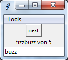
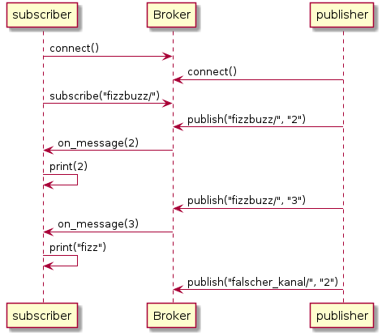

FizzBuzz Katas
Inhaltsverzeichnis
- 1. Auf Papier
- 2. Mit einer Methode
- 3. Ohne Verwendung einer Schleife (rekursiv)
- 4. Mit Hilfe von nebenläufigen Threads und Prozessen
- 5. Mit einer anderen IDE
- 6. In einer anderen Programmiersprache
- 7. Als Client-Server Anwendung
- 8. Mit einer grafischen Oberfläche (GUI)
- 9. Objekt-Orientiert: Klassen und Objekte verwenden
- 10. Objekt-Orientiert mit Vererbung
- 11. Funktional mit map, reduce und lambda-Ausdrücken
- 12. Als Webanwendung
- 13. In git-repo einchecken
- 14. Als installierbares Programm
- 15. Als getestetes Programm (mit unittest und doctests)
- 16. Mit einem EA-Modul ansteuern
- 17. Mit Anbindung an eine Datenbank
- 18. Mit docstring Dokumentation
- 19. Als Chatbot
- 20. Auf einem Cluster (mit GNU parallel)
- 21. In einem UML-Aktivitätsdiagramm
- 22. In einem UML-Sequenzdiagramm
- 23. In einem UML-Klassendiagramm
- 24. Als IOT-Anwendung mit einem Message-Broker (MQTT)
- 25. Mit Kommandozeilenparametern
- 26. Mit einer Konfigurationsdatei
- 27. Als Web-Service mit REST-API
- 28. In einer MVC-Architektur
- 29. Als Spiel (mit pygame)
- 30. In einem docker Container
- 31. Mit Fehlerbehandlung
- 32. Mit einem neuronalen Netzwerk
- 33. Mit logging in ein logfile
- 34. Mit einem Profiler
- 35. Mit einer geplotteten Visualisierung
FizzBuzz ist ein Zählspiel, bei dem die Zahlen bis 100 aufgezählt werden. Ist die Zahl durch 3 teilbar, wird "fizz" gesagt. Ist sie durch 5 teilbar, wird "buzz" gesagt. Ist sie durch 3 und 5 teilbar, wird "fizzbuzz" gesagt. Ansonsten wird die Zahl selbst gesagt.
Wir versuchen uns auf dem Blatt mit einer Aufwärmübung (Kata). Die anschließenden Übungen lösen alle dasselbe fizzbuzz-Problem, nutzen jedoch ganz unterschiedliche Herangehensweisen oder Technologien.
1 Auf Papier
1 2 fizz 4 buzz fizz 7 8 fizz buzz 11 fizz 13 14 fizzbuzz 16 17 fizz 19
2 Mit einer Methode
Hier ist eine erste einfache Variante.
1: def fizzbuzz_method(n): 2: for i in range(n): 3: if i % 3 == 0 and i % 5 == 0: 4: print("fizzbuzz") 5: elif i % 3 == 0: 6: print("fizz") 7: elif i % 5 == 0: 8: print("buzz") 9: else: 10: print(i) 11: 12: fizzbuzz_method(20)
fizzbuzz 1 2 fizz 4 buzz fizz 7 8 fizz buzz 11 fizz 13 14 fizzbuzz 16 17 fizz 19
Das nächste Beispiel wandelt die obige Variante ab, erzeugt aber dieselbe Ausgabe.
1: def fizzbuzz_method(n): 2: for i in range(n): 3: s = "" 4: 5: if i % 3 == 0: 6: s = "fizz" 7: if i % 5 == 0: 8: s += "buzz" 9: if len(s) == 0: 10: s = i 11: 12: print(s) 13: 14: fizzbuzz_method(20)
3 Ohne Verwendung einer Schleife (rekursiv)
1: def fizzbuzz_recursive(i): 2: if i == 0: 3: return 4: else: 5: fizzbuzz_recursive(i-1) 6: 7: if i % 3 == 0 and i % 5 == 0: 8: print("fizzbuzz") 9: elif i % 3 == 0: 10: print("fizz") 11: elif i % 5 == 0: 12: print("buzz") 13: else: 14: print(i) 15: 16: 17: fizzbuzz_recursive(20)
4 Mit Hilfe von nebenläufigen Threads und Prozessen
1: import threading 2: import time 3: 4: def fizzbuzz_thread(i): 5: time.sleep(1) 6: if i % 3 == 0 and i % 5 == 0: 7: print(i, "fizzbuzz") 8: elif i % 3 == 0: 9: print(i, "fizz") 10: elif i % 5 == 0: 11: print(i, "buzz") 12: else: 13: print(i) 14: 15: def fizzbuzz_start_threads(): 16: for i in range(20): 17: # Creating a thread object that will execute the method above 18: # with the given argument i. 19: th = threading.Thread(target=fizzbuzz_thread, args=(i,)) 20: th.start() 21: 22: fizzbuzz_start_threads()
3 fizz 4 2 1 0 fizzbuzz 5 buzz 7 6 fizz 10 buzz 8 11 9 fizz 14 15 fizzbuzz 16 17 13 18 fizz 12 fizz 19
Die Ausgabe kann bei jedem Start in einer anderen Reihenfolge
erfolgen, da die Methodenaufrufe fast gleichzeitig erfolgen. Obwohl
die Methode fizzbuzz_thread() zu Beginn wartet, ist das Programm
schnell beendet, da die Threads nicht sequentiell ablaufen, sondern
gleichzeitig.
In einer zweiten Variante verwenden wir echte Prozesse des Betriebssystems, die auch auf verschiedene Kerne oder Prozessoren aufgeteilt werden können. Hierfür gibt es das Paket multiprocessing.
1: import time 2: import multiprocessing 3: 4: def fizzbuzz_process(i): 5: time.sleep(1) 6: if i % 3 == 0 and i % 5 == 0: 7: print(i, "fizzbuzz") 8: elif i % 3 == 0: 9: print(i, "fizz") 10: elif i % 5 == 0: 11: print(i, "buzz") 12: else: 13: print(i) 14: 15: def fizzbuzz_start_processes(): 16: for i in range(20): 17: # Creating a process that will execute the method above 18: # with the given argument i. 19: pr = multiprocessing.Process(target=fizzbuzz_process, args=(i,)) 20: pr.start() 21: 22: fizzbuzz_start_processes()
0 fizzbuzz 1 2 3 fizz 4 5 buzz 6 fizz 7 9 fizz 8 10 buzz 11 12 fizz 13 15 fizzbuzz 14 16 17 18 fizz 19
Auch hier ist die Ausgabereihenfolge nicht-deterministisch. Zudem sieht man nun in einem Task-Manager, dass viele verschiedene Prozesse kurz gestartet werden.
5 Mit einer anderen IDE
Mögliche Kandidaten wären:
- IDLE
- PyCharm
- Emacs
- vim
- Atom
6 In einer anderen Programmiersprache
Mögliche Sprachen wären:
- Java
- Javascript
- C#
- C
- C++
- Bash
- Smalltalk
- Clojure
- eine Esoterische Programmiersprache (der Vortrag Esoterische Programmiersprachen stellt ein paar Vertreter vor)
7 Als Client-Server Anwendung
1: import socketserver 2: import socket 3: import threading 4: 5: class FizzBuzzHandler(socketserver.BaseRequestHandler): 6: def handle(self): 7: # received bytes from request and take the first one 8: i = self.request.recv(1)[0] 9: if i % 3 == 0 and i % 5 == 0: 10: answer = "fizzbuzz" 11: elif i % 3 == 0: 12: answer = "fizz" 13: elif i % 5 == 0: 14: answer = "buzz" 15: else: 16: answer = i 17: 18: print("[server] received:", i, "answer:", answer) 19: 20: class FizzBuzzClient: 21: def __init__(self, ip, port): 22: self.socket = (ip, port) 23: 24: def send(self, i): 25: with socket.socket(socket.AF_INET, socket.SOCK_STREAM) as sock: 26: sock.connect(self.socket) 27: print("[client] sending", i) 28: sock.sendall(bytes([i])) 29: 30: def fizzbuzz_client_server(): 31: # Starting the server in a separate thread 32: server_socket = ("127.0.0.1", 8081) 33: server = socketserver.TCPServer(server_socket, FizzBuzzHandler) 34: th = threading.Thread(target=server.serve_forever, daemon=True) 35: th.start() 36: 37: # starting the client 38: cl = FizzBuzzClient(*server_socket) 39: for i in range(20): 40: cl.send(i) 41: 42: fizzbuzz_client_server()
[client] sending 0 [server] received: 0 answer: fizzbuzz [client] sending 1 [server] received: 1 answer: 1 [client] sending 2 [server] received: 2 answer: 2 [client] sending 3 [server] received: 3 answer: fizz [client] sending 4 [server] received: 4 answer: 4 [client] sending 5 [server] received: 5 answer: buzz [client] sending 6 [server] received: 6 answer: fizz [client] sending 7 [server] received: 7 answer: 7 [client] sending 8 [server] received: 8 answer: 8 [client] sending 9 [server] received: 9 answer: fizz [client] sending 10 [server] received: 10 answer: buzz [client] sending 11 [server] received: 11 answer: 11 [client] sending 12 [server] received: 12 answer: fizz [client] sending 13 [server] received: 13 answer: 13 [client] sending 14 [server] received: 14 answer: 14 [client] sending 15 [server] received: 15 answer: fizzbuzz [client] sending 16 [server] received: 16 answer: 16 [client] sending 17 [server] received: 17 answer: 17 [client] sending 18 [server] received: 18 answer: fizz [client] sending 19 [server] received: 19 answer: 19
8 Mit einer grafischen Oberfläche (GUI)
Mit Python wird das einfache Paket tkinter für die Gestaltung von
GUIs mitgeliefert. Eine ausführliche Dokumentation ist unter
http://effbot.org/tkinterbook/ zu finden.

1: import tkinter 2: 3: class GUI: 4: def __init__(self): 5: self.i = 0 6: 7: root = tkinter.Tk() 8: root.title("FizzBuzz") 9: 10: # add menu 11: menubar = tkinter.Menu(root) 12: root.config(menu=menubar) 13: # adding Tools-menu to menubar 14: tools_menu = tkinter.Menu(menubar) 15: menubar.add_cascade(label="Tools", menu=tools_menu) 16: tools_menu.add_command(label="Next", command=self.click) 17: 18: # add button 19: btn = tkinter.Button(root, text="next", command=self.click) 20: btn.pack() 21: 22: self.lbl = tkinter.Label(root, text="fizzbuzz GUI") 23: self.lbl.pack() 24: self.ent = tkinter.Entry(root) 25: self.ent.pack() 26: # entering main event loop 27: root.mainloop() 28: 29: def click(self): 30: i = self.i 31: 32: # update label 33: self.lbl.configure(text="fizzbuzz von " + str(i)) 34: 35: # clear the entry field 36: self.ent.delete(0, tkinter.END) 37: 38: if i % 3 == 0 and i % 5 == 0: 39: self.ent.insert(0, "fizzbuzz") 40: elif i % 3 == 0: 41: self.ent.insert(0, "fizz") 42: elif i % 5 == 0: 43: self.ent.insert(0, "buzz") 44: else: 45: self.ent.insert(0, i) 46: 47: self.i += 1 48: 49: GUI()
9 Objekt-Orientiert: Klassen und Objekte verwenden
1: class FizzBuzzerOutput: 2: def __init__(self, n): 3: self.n = n 4: 5: def print(self): 6: i = self.n 7: 8: if i % 3 == 0 and i % 5 == 0: 9: print("fizzbuzz") 10: elif i % 3 == 0: 11: print("fizz") 12: elif i % 5 == 0: 13: print("buzz") 14: 15: 16: class NumberOutput: 17: def __init__(self, n): 18: self.n = n 19: 20: def print(self): 21: print(self.n) 22: 23: 24: class FizzBuzzGame: 25: def __init__(self, i): 26: if i % 3 == 0 or i % 5 == 0: 27: self.printer = FizzBuzzerOutput(i) 28: else: 29: self.printer = NumberOutput(i) 30: 31: def print(self): 32: self.printer.print() 33: 34: 35: for i in range(20): 36: f = FizzBuzzGame(i) 37: f.print()
10 Objekt-Orientiert mit Vererbung
Wir verwenden zwei Klassen Game und FizzBuzzGame, wobei letztere
die erstere erweitert und damit alle Attribute und Methoden von dieser
übernimmt und ggf. um weitere ergänzt. Man kann sagen FizzbuzzGame
ist ein Game. Durch die Vererbung muss nicht jedes neue Spiel die
Gameloop erneut programmieren, sondern kann diese generische
Funktionalität übernehmen.
1: class Game: 2: def start_game_loop(self): 3: """Starting the gameloop of the game.""" 4: self.setup() 5: while True: 6: self.handle_input() 7: self.update() 8: self.draw() 9: 10: def setup(): 11: """Will be invoked once at the beginning of a game.""" 12: pass 13: 14: def handle_input(): 15: """Evaluate inputs of the player.""" 16: pass 17: 18: def update(): 19: """Updating all game objects and game values.""" 20: pass 21: 22: def draw(): 23: """Draw the game world.""" 24: pass 25: 26: class FizzBuzzGame(Game): # Subclass(Superclass) 27: def __init__(self): 28: self.n = 1 29: self.answer_correct = False 30: self.playerinput = "" 31: 32: def setup(self): 33: print("Spiel gestartet") 34: 35: def handle_input(self): 36: self.playerinput = input(str(self.n) + " ? ") 37: 38: def update(self): 39: # Evaluating player input 40: soll = self._fizzbuzz(self.n) 41: self.answer_correct = self.playerinput == str(soll) 42: if self.answer_correct: 43: self.n += 1 44: 45: # Checking winning condition 46: if self.n == 6: 47: print("Gewonnen!") 48: exit() 49: 50: def draw(self): 51: if self.answer_correct: 52: print("Richtig :)") 53: else: 54: print("Leider Falsch. Probiere es erneut.") 55: 56: def _fizzbuzz(self, i): 57: if i % 3 == 0 and i % 5 == 0: 58: return "fizzbuzz" 59: elif i % 3 == 0: 60: return "fizz" 61: elif i % 5 == 0: 62: return "buzz" 63: else: 64: return i 65: 66: 67: fbs = FizzBuzzGame() 68: fbs.start_game_loop()
Wir simulieren ein Spiel, indem wir testweise die Eingaben 1, 2 und "fizz" an das Spiel senden (Spielereingaben tauchen daher nicht in der Ausgabe auf).
/bin/echo -e "1\n2\nfizz\n4\nbuzz\n" | python3 fizzbuzz_vererbung.py
Spiel gestartet 1 ? Richtig :) 2 ? Richtig :) 3 ? Richtig :) 4 ? Richtig :) 5 ? Gewonnen!
11 Funktional mit map, reduce und lambda-Ausdrücken
1: import functools 2: 3: def by(number): 4: """Return a function to prove divisibility by number.""" 5: return (lambda i: i % number == 0) 6: 7: def fizzbuzz_func(i): 8: # create two functions to test for divisibility 9: by5 = by(5) 10: by3 = by(3) 11: 12: if by5(i) and by3(i): 13: return "fizzbuzz" 14: elif by3(i): 15: return "fizz" 16: elif by5(i): 17: return "buzz" 18: else: 19: return i 20: 21: def fizzbuzz_functional(): 22: # apply fizzbuzz_func to numbers 23: res = map(fizzbuzz_func, range(20)) 24: 25: # reduce the result into a string 26: s = functools.reduce( 27: lambda acc, i: acc + str(i) + "\n", # updating function 28: res, # values to be reduced 29: "") # initial value 30: 31: print(s) 32: 33: fizzbuzz_functional()
12 Als Webanwendung
Bottle (https://bottlepy.org) ist ein Webframework, das leicht mit
pip installiert werden kann.
pip install bottle
1: import bottle 2: 3: @bottle.route("/fizzbuzz/<number:int>") 4: def fizzbuzz_web_route(number): 5: results = [] 6: for i in range(number): 7: if i % 3 == 0 and i % 5 == 0: 8: results.append("fizzbuzz") 9: elif i % 3 == 0: 10: results.append("fizz") 11: elif i % 5 == 0: 12: results.append("buzz") 13: else: 14: results.append(i) 15: 16: html = """ 17: <!DOCTYPE html> 18: <html> 19: <body> 20: <h1>FizzBuzz Numbers up to {{max}}</h1> 21: <table> 22: % for r in results: 23: <tr><td> {{r}} </td></tr> 24: %end 25: </table> 26: </body> 27: </html> 28: """ 29: 30: return bottle.template(html, max=number, results=results) 31: 32: def fizzbuzz_web(): 33: bottle.run(host="127.0.0.1", port=8081) 34: 35: fizzbuzz_web()
Nach dem Start des Webservers kann die Webseite http://localhost:8081/fizzbuzz/20 aufgerufen werden.
Die Webanwendung kann in einen bestehenden Webserver, wie z.B. apache mit Hilfe des Moduls mod wsgi integriert werden. Die Integration wird z.B. in der Dokumentation von bottlepy beschrieben.
Zunächst wird das apache2-Modul installiert. Eine Dokumentation
befindet sich danach unter /usr/share/doc/libapache2-mod-py3.
sudo apt install libapache2-mod-py3
Die folgende Datei wird als Einstiegspunkt im Webroot abgelegt -
z.B. in /var/www/fizzbuzz/index.wsgi.
1: import os 2: import bottle 3: 4: # change working directory 5: os.chdir(os.path.dirname(__file__)) 6: 7: # create the app 8: application = bottle.Bottle() 9: 10: @application.route("/<number:int>") 11: def fizzbuzz_web_route(number): 12: results = [] 13: for i in range(number): 14: if i % 3 == 0 and i % 5 == 0: 15: results.append("fizzbuzz") 16: elif i % 3 == 0: 17: results.append("fizz") 18: elif i % 5 == 0: 19: results.append("buzz") 20: else: 21: results.append(i) 22: 23: html = """ 24: <!DOCTYPE html> 25: <html> 26: <body> 27: <h1>FizzBuzz Numbers up to {{max}}</h1> 28: <table> 29: % for r in results: 30: <tr><td> {{r}} </td></tr> 31: %end 32: </table> 33: </body> 34: </html> 35: """ 36: 37: return bottle.template(html, max=number, results=results)
Anschließend wird die Webserverkonfiguration so angepasst, dass sie den neuen Einstiegspunkt verwendet:
<VirtualHost *> ServerName www.example.com WSGIDaemonProcess fizzbuzz user=www-data group=www-data processes=1 threads=5 WSGIScriptAlias / /var/www/fizzbuzz/index.wsgi <Directory /var/www/fizzbuzz> WSGIProcessGroup fizzbuzz WSGIApplicationGroup %{GLOBAL} Require all granted </Directory> </VirtualHost>
Nach einem Neustart des Webservers
sudo service apache2 restart
ist die Seite unter der URL http://localhost/fizzbuzz/20 erreichbar.
13 In git-repo einchecken
Ein typischer Ablauf wird z.B. bei github vorgestellt. Dort gibt es auch ein interaktives Tutorial inklusive Spickzettel.
1: # Ein Verzeichnis erstellen und den Quelltext kopieren/erstellen 2: mkdir /tmp/fizzbuzz_repo 3: cd /tmp/fizzbuzz_repo 4: echo 'print("Hallo Welt")' > hallo.py 5: 6: # Repo initialisieren 7: git init 8: 9: # Dateien für commit vormerken 10: git add hallo.py 11: 12: # Dateien in Repo einchecken 13: git commit -m "commit hallo.py" hallo.py 14: 15: # Logfile anschauen 16: git log 17: 18: # Feature branch erzeugen und wechseln 19: git checkout -b new_feature 20: 21: # Dateien ändern 22: echo 'print("new feature")' >> hallo.py 23: 24: # Einen Commit im neuen Branch erzeugen 25: git commit -m "added new feature" hallo.py 26: 27: # Zurück zum Hauptbranch wechseln 28: git checkout master 29: 30: # Feature-Branch in den Hauptzweig integrieren 31: git merge new_feature 32: 33: # Wenn alles geklappt hat, kann der Feature Branch gelöscht werden 34: git branch -d new_feature
14 Als installierbares Programm
Zunächst muss eine Datei setup.py angelegt werden. Sie könnte
folgenden Inhalt haben:
1: from setuptools import setup, find_packages 2: 3: setup( 4: name = "fizzbuzz_katas", 5: version = "0.1", 6: description = "Exercises with the famous FizzBuzz-Game.", 7: packages = find_packages() 8: )
Das Programm kann dann mit folgenden Befehlen installiert oder erstellt werden:
1: # Release in Unterordner erstellen: 2: python setup.py sdist
Anschließend kann das Paket (lokal) installiert werden.
1: # Systemweite Installation: 2: python setup.py install 3: 4: # Lokale Installation: 5: #python setup.py install --user
15 Als getestetes Programm (mit unittest und doctests)
Bei einem UnitTest testet eine Testklasse die Methoden einer anderen Klasse und prüft einen erhaltenen Ist-Wert gegen den erwarteten Soll-Wert. In Python geschiet dies über das Paket unittest.
1: import unittest 2: 3: class FizzBuzz: 4: def fizzbuzz(self, i): 5: if i % 3 == 0 and i % 5 == 0: 6: return "fizzbuzz" 7: elif i % 3 == 0: 8: return "fizz" 9: elif i % 5 == 0: 10: return "buzz" 11: else: 12: return i 13: 14: class FizzBuzzTest(unittest.TestCase): 15: """This test class tests the class FizzBuzz. 16: 17: Possible input will be testet against desired outputs.""" 18: 19: def setUp(self): 20: """Will be invoked before every test.""" 21: self.fizzbuzz = FizzBuzz() 22: 23: def test_fizzbuzz(self): 24: fb = self.fizzbuzz 25: 26: # Comparing values 27: self.assertEqual(fb.fizzbuzz(2), 2) 28: self.assertEqual(fb.fizzbuzz(15), "fizzbuzz") 29: self.assertEqual(fb.fizzbuzz(9), "fizz") 30: self.assertEqual(fb.fizzbuzz(10), "buzz") 31: 32: # Boolean comparison 33: self.assertTrue(fb.fizzbuzz(12) != 12) 34: self.assertFalse(fb.fizzbuzz(12) == 12) 35: 36: # Comparing types 37: self.assertIsInstance(fb.fizzbuzz(2), int) 38: 39: # Comparing with collections 40: for i in range(20): 41: result = fb.fizzbuzz(i) 42: self.assertIn(result, ['fizz', 'buzz', 'fizzbuzz', i]) 43: 44: def run_unit_tests(): 45: # Run all unit tests 46: unittest.main() 47: 48: run_unit_tests()
Die Tests können bei Python auch direkt in den Kommentaren stehen. In
diesem Fall spricht man von einem doctest. Die Zeichen ">>>"
beschreiben die Eingabe, direkt darunter kommt die erwartete Ausgabe.
1: import doctest 2: 3: class FizzBuzz: 4: def fizzbuzz(self, i): 5: """This is a comment containing a test. This is called a doctest in Python. 6: 7: >>> fb = FizzBuzz() 8: >>> fb.fizzbuzz(3) 9: 'fizz' 10: >>> fb.fizzbuzz(5) 11: 'buzz' 12: >>> fb.fizzbuzz(10) 13: 'buzz' 14: >>> fb.fizzbuzz(11) 15: 11 16: 17: Now a test that creates an error: 18: 19: >>> fb.fizzbuzz(12) 20: 12 21: 22: """ 23: if i % 3 == 0 and i % 5 == 0: 24: return "fizzbuzz" 25: elif i % 3 == 0: 26: return "fizz" 27: elif i % 5 == 0: 28: return "buzz" 29: else: 30: return i 31: 32: def run_doc_tests(): 33: doctest.testmod() 34: 35: run_doc_tests()
**********************************************************************
File "<stdin>", line 19, in __main__.FizzBuzz.fizzbuzz
Failed example:
fb.fizzbuzz(12)
Expected:
12
Got:
'fizz'
**********************************************************************
1 items had failures:
1 of 6 in __main__.FizzBuzz.fizzbuzz
***Test Failed*** 1 failures.
16 Mit einem EA-Modul ansteuern
Die Bibliothek eapi (https://github.com/pintman/ea_rpi_modul) kann
über pip installiert werden.
pip install eapi
Nun kann es verwendet werden. Die wichtigste Klasse ist
eapi.hw.EAModul.
1: import eapi.hw 2: 3: class FizzBuzzEAModul: 4: def __init__(self): 5: self.i = 0 6: 7: eam = eapi.hw.EAModul() 8: # switching on green LED only 9: eam.schalte_leds(False, False, True) 10: # register for events when button0 pressed 11: eam.taster_event_registrieren(0, self.taster0_gedrueckt) 12: 13: # wait for taster event 14: while True: 15: pass 16: 17: def taster0_gedrueckt(self, pin): 18: if self.i % 3 == 0 and self.i % 5 == 0: 19: print("fizzbuzz") 20: elif self.i % 3 == 0: 21: print("fizz") 22: elif self.i % 5 == 0: 23: print("buzz") 24: else: 25: print(self.i) 26: 27: self.i += 1 28: 29: FizzBuzzEAModul()
Eine Hilfe zu dem Modul lässt sich über pydoc abrufen.
python -m pydoc eapi.hw.EAModul
Help on class EAModul in eapi.hw:
eapi.hw.EAModul = class EAModul(builtins.object)
| Die Klasse EAModul hilft bei der Ansteuerung eines Eingabe-Ausgabe-Moduls
| für den Raspberry Pi. Es besteht aus drei LED und zwei Tastern.
|
| Methods defined here:
|
| __init__(self, pin_taster0=29, pin_taster1=31, pin_led_rot=33, pin_led_gelb=35, pin_led_gruen=37)
| Das Modul wird mit den gegebenen Pins konfiguriert.
|
| Pins der LEDs werden als Ausgänge und Pins der Taster als Eingänge
| konfiguriert. Wenn keine PINS angegeben werden, werden die PINs
| oberhalb des GND Pins links unten verwendet.
|
| >>> from eapi.hw import EAModul
|
| Wenn keine Werte angegeben werden, werden die Standard-Pins verwendet.
|
| >>> ea1 = EAModul()
| >>> ea1.cleanup()
|
| Bei einer abweichenden Verdrahtung können die Pins angegeben werden.
|
| >>> ea2 = EAModul(29, 31, 33, 35, 37)
|
| Um den Quelltext übersichtlicher zu gestalten, können die Pins
| direkt bezeichnet werden.
|
| >>> ea2 = EAModul(pin_taster0=29, pin_taster1=31, pin_led_rot=33,
| ... pin_led_gelb=35, pin_led_gruen=37)
| >>> ea2.cleanup()
|
| cleanup(self)
| Setzt alle Pins des Pi wieder in den Ausgangszustand.
|
| >>> from eapi.hw import EAModul
| >>> ea = EAModul()
| >>> ea.cleanup()
|
| led_event_registrieren(self, led_farbe, methode)
| Registriert eine Methode, die ausgeführt wird, sobald die
| entsprechende LED ihren Wert ändert.
|
| Die Methode wird über alle Veränderungen an der LED informiert. Dazu
| wird die übergebene Methode aufgerufen.
|
| >>> from eapi.hw import EAModul
|
| >>> def update_rote_led(neuer_wert):
| ... print("update: Status der roten LED hat sich geändert.")
| ... print("Neuer Wert:", neuer_wert)
|
| >>> ea = EAModul()
| >>> ea.led_event_registrieren(EAModul.LED_ROT, update_rote_led)
|
| Nun wird die Update-Methode aufgerufen, sobald sich der Wert der LED
| ändert.
|
| >>> ea.schalte_led(EAModul.LED_ROT, 1)
| update: Status der roten LED hat sich geändert.
| Neuer Wert: 1
|
| >>> ea.schalte_led(EAModul.LED_ROT, 0)
| update: Status der roten LED hat sich geändert.
| Neuer Wert: 0
|
| >>> ea.cleanup()
|
| schalte_led(self, led_farbe, an_aus)
| Schalte die LED mit der gegebenen Nummer ein (1) oder aus (0).
|
| Der Wert für led_farbe ist LED_ROT, LED_GELB oder LED_GRUEN.
|
| Eine einfache Verwendung könnte wie folgt aussehen:
|
| >>> from eapi.hw import EAModul
|
| >>> ea_modul = EAModul()
| >>> ea_modul.schalte_led(EAModul.LED_ROT, 1)
| >>> ea_modul.schalte_led(EAModul.LED_GELB, 0)
| >>> ea_modul.schalte_led(EAModul.LED_GRUEN, 1)
| >>> ea_modul.cleanup()
|
| schalte_leds(self, rot_anaus, gelb_anaus, gruen_anaus)
| Schalte alle drei LEDs zu gleichen Zeit an oder aus.
|
| >>> from eapi.hw import EAModul
|
| >>> ea_modul = EAModul()
| >>> ea_modul.schalte_leds(True, False, True)
| >>> ea_modul.cleanup()
|
| taster_event_registrieren(self, taster_nr, methode)
| Registriere eine Methode, die bei Betätigung eines Tasters
| ausgeführt wird.
|
| Die übergebene Methode muss ein Argument haben und wird mit der
| Pin-Nur des Tasters aufgerufen, sobald der Taster gedrückt
| wird. Eine einfache Verwendung könnte wie folgt aussehen:
|
| >>> def taster0_gedrueckt(pin):
| ... print("Taster 0 wurde gedrückt.")
|
| >>> ea_modul = EAModul()
| >>> ea_modul.taster_event_registrieren(0, taster0_gedrueckt)
| >>> ea_modul.cleanup()
|
| taster_gedrueckt(self, num=0)
| Liest den Wert des Tasters mit der gegebenen Nummer aus und gibt den
| Wert zurück. Eine einfache Verwendung könnte wie folgt aussehen:
|
| >>> from eapi.hw import EAModul
| >>> import time
|
| >>> ea_modul = EAModul()
| >>> while not ea_modul.taster_gedrueckt(1):
| ... ea_modul.schalte_led(EAModul.LED_ROT, 1)
| ... time.sleep(0.2)
| ... ea_modul.schalte_led(EAModul.LED_ROT, 0)
| >>> ea_modul.cleanup()
|
| ----------------------------------------------------------------------
| Data descriptors defined here:
|
| __dict__
| dictionary for instance variables (if defined)
|
| __weakref__
| list of weak references to the object (if defined)
|
| ----------------------------------------------------------------------
| Data and other attributes defined here:
|
| LED_GELB = 1
|
| LED_GRUEN = 2
|
| LED_ROT = 0
17 Mit Anbindung an eine Datenbank
1: import sqlite3 2: 3: def fizzbuzz_insert_into_db(): 4: conn = sqlite3.connect("fizzbuzz.db") 5: c = conn.cursor() 6: c.execute("CREATE TABLE IF NOT EXISTS fizzbuzz(nr int, ergebnis text)") 7: 8: for i in range(20): 9: erg = "" 10: if i % 3 == 0 and i % 5 == 0: 11: erg = "fizzbuzz" 12: elif i % 3 == 0: 13: erg = "fizz" 14: elif i % 5 == 0: 15: erg = "buzz" 16: else: 17: erg = i 18: 19: c.execute("INSERT INTO fizzbuzz VALUES(?,?)", (i,erg)) 20: 21: conn.commit() 22: conn.close() 23: 24: def fizzbuzz_select_from_db(): 25: conn = sqlite3.connect("fizzbuzz.db") 26: c = conn.cursor() 27: rows = c.execute("SELECT nr, ergebnis FROM fizzbuzz") 28: 29: print("Nr.\tErgebnis") 30: for i,erg in rows: 31: print(i, " ", erg) 32: 33: conn.close() 34: 35: fizzbuzz_insert_into_db() 36: fizzbuzz_select_from_db()
Nach dem Versuch entsteht eine Datei fizzbuzz.db, die man mit
sqlite befragen oder auch einfach kopieren und löschen kann.
rm fizzbuzz.db
18 Mit docstring Dokumentation
1: class FizzBuzzGame: 2: """A class for a fizzbuzz game.""" 3: 4: def fizzbuzz_documented(n): 5: """This method runs through all numbers from 0 to n-1. 6: 7: It prints 'fizz' if the number is divisible by 3, 'buzz' if it 8: is divisble by 5, 'fizzbuzz' if it is divisible 3 and 5 and 9: the number itseld otherwise. 10: """ 11: 12: for i in range(n): 13: if i % 3 == 0 and i % 5 == 0: 14: print("fizzbuzz") 15: elif i % 3 == 0: 16: print("fizz") 17: elif i % 5 == 0: 18: print("buzz") 19: else: 20: print(i) 21: 22: help(FizzBuzzGame)
Help on class FizzBuzzGame in module __main__: class FizzBuzzGame(builtins.object) | A class for a fizzbuzz game. | | Methods defined here: | | fizzbuzz_documented(n) | This method runs through all numbers from 0 to n-1. | | It prints 'fizz' if the number is divisible by 3, 'buzz' if it | is divisble by 5, 'fizzbuzz' if it is divisible 3 and 5 and | the number itseld otherwise. | | ---------------------------------------------------------------------- | Data descriptors defined here: | | __dict__ | dictionary for instance variables (if defined) | | __weakref__ | list of weak references to the object (if defined)
Der Kommentar einer Methode oder Klasse steht immer als erster String in der Deklaration.
Er kann im Python-Interpreter mit help() abgerufen werden:
Außerdem gibt es das Modul pydoc, mit dem eine Dokumentation auf der
Kommandozeile oder über einen Webserver zur Verfügung steht.
pydoc3 fizzbuzz.fizzbuzz_dokumentiert python -m pydoc fizzbuzz.fizzbuzz_dokumentiert
Webserver starten auf Port 8080 mit Dokumentation unter http://localhost:8080
pydoc -p 8080 # alternativ: python -m pydoc -p 8080
19 Als Chatbot
Wir verwenden hier sopel als Web-Framework (https://sopel.chat/ und https://github.com/sopel-irc/sopel/wiki).
Andere Bots sind etwa err oder der pyton-telegram-bot.
Installation
pip install sopel
Konfiguration (in ~/.sopel) erstellen:
sopel
Nach ein paar Fragen könnte die Konfiguration wie folgt aussehen.
1: [core] 2: nick = FizzBuzzBot 3: host = irc.freenode.net 4: use_ssl = false 5: port = 6667 6: owner = fizzbuzz_owner 7: channels = #fizzbuzz
Eigenen Bot in ~/.sopel/modules/fizzbuzz.py erstellen
1: from sopel import module 2: 3: @module.commands('fizzbuzz') 4: def echo(bot, trigger): 5: # to everybody: bot.say("...") 6: # to questioner: bot.reply("...") 7: 8: # take and convert argument 9: i = int(trigger.group(2)) 10: 11: if i % 3 == 0 and i % 5 == 0: 12: bot.reply("fizzbuzz") 13: elif i % 3 == 0: 14: bot.reply("fizz") 15: elif i % 5 == 0: 16: bot.reply("buzz") 17: else: 18: bot.reply(i)
Sopel starten
sopel
Eine mögliche Chat-Konversation (Sopel-Befehle beginnen mit einem Punkt):
= FizzBuzzBot has joined <fizzbuzz_owner> .fizzbuzz 1 <FizzBuzzBot> fizzbuzz_owner: 1 <fizzbuzz_owner> .fizzbuzz 2 <FizzBuzzBot> fizzbuzz_owner: 2 <fizzbuzz_owner> .fizzbuzz 3 <FizzBuzzBot> fizzbuzz_owner: fizz <fizzbuzz_owner> .fizzbuzz 5 <FizzBuzzBot> fizzbuzz_owner: buzz <fizzbuzz_owner> .fizzbuzz 14 <FizzBuzzBot> fizzbuzz_owner: 14 <fizzbuzz_owner> .fizzbuzz 15 <FizzBuzzBot> fizzbuzz_owner: fizzbuzz
20 Auf einem Cluster (mit GNU parallel)
Hierfür bedienen wir uns des Programmes GNU parallel. Es muss auf dem Rechner installiert sein oder lässt sich unter Ubuntu leicht nachinstallieren.
sudo apt-get install parallel
Wir nutzen die folgende Datei fizzbuzz.py.
1: import sys 2: 3: def fizzbuzz_cluster(): 4: i = int (sys.argv[1]) 5: 6: if i % 3 == 0 and i % 5 == 0: 7: print(i, "fizzbuzz") 8: elif i % 3 == 0: 9: print(i, "fizz") 10: elif i % 5 == 0: 11: print(i, "buzz") 12: else: 13: print(i, i) 14: 15: fizzbuzz_cluster()
Zuerst muss die Datei fizzbuzz.py auf jeden Rechner im Cluster
übertragen werden und der ssh-login gemäß der Beschreibung in man
parallel eingerichtet worden sein. Dies wird im Abschnitt "EXAMPLE:
Using remote computers" der man-page beschrieben.
Nun folgt der Aufruf:
seq 20 | parallel --sshlogin server1,server2,server3 python3 fizzbuzz.py
seq 20 generiert die Zahlen 1 bis 20 und sendet sie über eine Pipe (|)
an den Befehl parallel. Dieser verteilt die Aufrufe
python3 fizzbuzz.py 1,python3 fizzbuzz.py 2,python3 fizzbuzz.py 3,python3 fizzbuzz.py 4',
auf die Server server1, server2 und server3.
21 In einem UML-Aktivitätsdiagramm
22 In einem UML-Sequenzdiagramm
Der FizzbuzzServer hat eine Methode fizzbuzz(zahl: int): answer, die
von einem Client mit einer Zahl aufgerufen werden kann. Die Antwort
ist eine Zahl oder ein String.
23 In einem UML-Klassendiagramm
Attribute und Methoden sind mit einer Sichtbarkeit (+=public (überall zugreifbar), #=protected (aus der Klasse selbst und Kindklassen zugreifbar), -=private (nur aus der Klasse selbst zugreifbar)) und einem Rückgabewert bzw. Typ gekennzeichnet.
Dies Klasse könnte wie folgt verwendet werden.
1: class FizzBuzzGame: 2: def __init__(self, n): 3: # protected/private attributes are marked with one/two underscores 4: self.__number = n 5: 6: def fizzbuzz(self): 7: if self.__number % 3 == 0 and self.__number % 5 == 0: 8: return "fizzbuzz" 9: elif self.__number % 3 == 0: 10: return "fizz" 11: elif self.__number % 5 == 0: 12: return "buzz" 13: else: 14: return self.__number 15: 16: fb = FizzBuzzGame(2) 17: print("Eingabe:", 2, "Ausgabe:", fb.fizzbuzz()) 18: fb = FizzBuzzGame(15) 19: print("Eingabe:", 15, "Ausgabe:", fb.fizzbuzz())
Eingabe: 2 Ausgabe: 2 Eingabe: 15 Ausgabe: fizzbuzz
Da es sich bei fizzbuzz um ein Spiel handelt, bietet es sich an, Vererbung an dieser Stelle zu nutzen. Der Pfeil zwischen den Klassen wird in Pfeilrichtung als "ist ein" gelesen.
Da das Spiel gewöhnlich von einem Spieler gespielt wird, kann dies als eine "hat"-Beziehung durch eine Aggregation-Beziehung mit einer nicht ausgefüllten Raute dargestellt werden.
24 Als IOT-Anwendung mit einem Message-Broker (MQTT)
MQTT ist ein u.a. von IBM entwickeltes offenes Protokoll, das auf Port 1883 und 8883 (mit Verschlüsselung) läuft und für die Übertragung von Sensordaten zwischen Maschinen entwickelt wurde. Ein Artikel bei heise und ein Artikel bei dzone beschreiben das Protokoll ausführlich.
Als Client-Bibliothek wird paho-mqtt verwendet. Diese lässt sich einfach installieren.
pip install --user paho-mqtt
Eine mögliche Kommunikation zwischen zwei Clients und dem Broker.

1: import paho.mqtt.client as mqtt 2: import threading 3: import time 4: 5: class FizzbuzzPublisher: 6: def __init__(self, server="iot.eclipse.org", port=1883): 7: self.client = mqtt.Client() 8: self.client.connect(server, port, keepalive=60) 9: 10: def publish(self, payload): 11: print("[publish]", payload) 12: self.client.publish("fizzbuzz/", payload) 13: 14: 15: class FizzbuzzSubscriber: 16: def __init__(self, server="iot.eclipse.org", port=1883): 17: self.client = mqtt.Client() 18: self.client.on_connect = self.on_connect 19: self.client.on_message = self.on_message 20: self.client.connect(server, port, keepalive=60) 21: 22: def start(self): 23: self.client.loop_forever() 24: 25: def on_connect(self, client, userdata, flags, rc): 26: print("[connected]") 27: self.client.subscribe("fizzbuzz/") 28: 29: def on_message(self, client, userdata, msg): 30: i = int(msg.payload) 31: 32: if i % 3 == 0 and i % 5 == 0: 33: answer = "fizzbuzz" 34: elif i % 3 == 0: 35: answer = "fizz" 36: elif i % 5 == 0: 37: answer = "buzz" 38: else: 39: answer = i 40: 41: print("[msg reveived] topic:", msg.topic, "payload:", i, "answer:", answer) 42: 43: 44: #### Subscriber #### 45: 46: # Start thread in background that responds to messages 47: print("[subscribing]") 48: sub = FizzbuzzSubscriber() 49: th1 = threading.Thread(target=sub.start, daemon=True) 50: th1.start() 51: 52: #### Publisher #### 53: 54: print("[start publishing]") 55: pub = FizzbuzzPublisher() 56: for i in range(1,21): 57: pub.publish(i) 58: # waiting some time and give the subscribed client time to do the job. 59: time.sleep(0.1) 60: 61: time.sleep(1)
[subscribing] [start publishing] [publish] 1 [connected] [publish] 2 [publish] 3 [publish] 4 [msg reveived] topic: fizzbuzz/ payload: 1 answer: 1 [msg reveived] topic: fizzbuzz/ payload: 2 answer: 2 [publish] 5 [publish] 6 [publish] 7 [publish] 8 [publish] 9 [publish] 10 [msg reveived] topic: fizzbuzz/ payload: 3 answer: fizz [publish] 11 [msg reveived] topic: fizzbuzz/ payload: 4 answer: 4 [msg reveived] topic: fizzbuzz/ payload: 5 answer: buzz [msg reveived] topic: fizzbuzz/ payload: 6 answer: fizz [msg reveived] topic: fizzbuzz/ payload: 7 answer: 7 [msg reveived] topic: fizzbuzz/ payload: 8 answer: 8 [msg reveived] topic: fizzbuzz/ payload: 9 answer: fizz [publish] 12 [msg reveived] topic: fizzbuzz/ payload: 10 answer: buzz [publish] 13 [publish] 14 [msg reveived] topic: fizzbuzz/ payload: 11 answer: 11 [msg reveived] topic: fizzbuzz/ payload: 12 answer: fizz [publish] 15 [msg reveived] topic: fizzbuzz/ payload: 13 answer: 13 [publish] 16 [msg reveived] topic: fizzbuzz/ payload: 14 answer: 14 [publish] 17 [publish] 18 [msg reveived] topic: fizzbuzz/ payload: 15 answer: fizzbuzz [msg reveived] topic: fizzbuzz/ payload: 16 answer: 16 [publish] 19 [msg reveived] topic: fizzbuzz/ payload: 17 answer: 17 [publish] 20 [msg reveived] topic: fizzbuzz/ payload: 18 answer: fizz [msg reveived] topic: fizzbuzz/ payload: 19 answer: 19 [msg reveived] topic: fizzbuzz/ payload: 20 answer: buzz
Das obige Beispiel nutzt einen Testserver unter der Adresse
iot.eclipse.org. Bei github gibt es eine Übersicht mit MQTT
Servern.
Das folgende Beispiel verwendet das EA-Modul.
Hierbei agiert ein Taster als Sensor, der beim Drücken in das Topic
eamodul/taster0/pressed eine 1 sendet.
Eine LED agiert als Sensor, die sich beim Topic registriert und auf Nachrichten entsprechend reagiert: Wenn die Zahl durch 3 bzw. 5 teilbar ist, geht die gelbe bzw. rote LED an, ansonsten leuchtet nur die grüne LED.
Es folgt der Quelltext.
1: import eapi.hw 2: import paho.mqtt.client as mqtt 3: 4: 5: class MqttModul(): 6: def __init__(self, server="iot.eclipse.org", port=1883): 7: self.num = 1 8: self.client = mqtt.Client() 9: self.client.connect(server, port, keepalive=60) 10: self.client.on_connect = self.on_connect 11: self.client.on_message = self.on_message 12: self.client.connect(server, port, keepalive=60) 13: 14: self.eamodul = eapi.hw.EAModul() 15: self.eamodul.taster_event_registrieren(0, self.taster_gedrueckt) 16: 17: def taster_gedrueckt(self, pin): 18: print("[publish]", self.num) 19: self.client.publish("eamodul/taster0/pressed/", 1) 20: 21: def on_connect(self, client, userdata, flags, rc): 22: print("[connected]") 23: self.client.subscribe("eamodul/taster0/pressed/") 24: 25: def on_message(self, client, userdata, msg): 26: print("[msg reveived] topic:", msg.topic, "payload:", msg.payload) 27: 28: # turn off all LED rot, gelb, grün 29: self.eamodul.schalte_leds(False, False, False) 30: 31: if self.num % 3 == 0 or self.num % 5 == 0: 32: if self.num % 3 == 0: 33: self.eamodul.schalte_led(eapi.hw.EAModul.LED_GELB, True) 34: if self.num % 5 == 0: 35: self.eamodul.schalte_led(eapi.hw.EAModul.LED_ROT, True) 36: else: 37: self.eamodul.schalte_led(eapi.hw.EAModul.LED_GRUEN, True) 38: 39: self.num += 1 40: 41: def start(self): 42: self.client.loop_forever() 43: 44: 45: def main(): 46: mqttmod = MqttModul() 47: mqttmod.start() 48: 49: if __name__ == "__main__": 50: main()
25 Mit Kommandozeilenparametern
Kommandozeilenparameter stehen in sys.argv.
1: import sys 2: 3: def fizzbuzz(n): 4: for i in range(n): 5: if i % 3 == 0 and i % 5 == 0: 6: print("fizzbuzz") 7: elif i % 3 == 0: 8: print("fizz") 9: elif i % 5 == 0: 10: print("buzz") 11: else: 12: print(i) 13: 14: if __name__ == "__main__": 15: print("Evaluating command line:", sys.argv) 16: 17: # sys.argv contains all parameters, program name at position 0. 18: num_arg = sys.argv[1] 19: number = int(num_arg) 20: 21: fizzbuzz(number)
Aufruf mit einem Parameter:
python fizzbuzz-cli.py 20
Evaluating command line: ['fizzbuzz-cli.py', '20'] fizzbuzz 1 2 fizz 4 buzz fizz 7 8 fizz buzz 11 fizz 13 14 fizzbuzz 16 17 fizz 19
Mit dem Paket argparse
(https://docs.python.org/3/library/argparse.html) wird die Auswertung
von Kommandozeilenparametern manchmal vereinfacht.
1: import argparse 2: 3: def fizzbuzz(n): 4: for i in range(n): 5: if i % 3 == 0 and i % 5 == 0: 6: print("fizzbuzz") 7: elif i % 3 == 0: 8: print("fizz") 9: elif i % 5 == 0: 10: print("buzz") 11: else: 12: print(i) 13: 14: if __name__ == "__main__": 15: # Using class ArgumentParser to help handling parameters 16: parser = argparse.ArgumentParser(description="FizzBuzz Spiel") 17: parser.add_argument("--max_wert", type=int, default=20, 18: help="Bis zu diesem Wert wird gezählt") 19: args = parser.parse_args() 20: fizzbuzz(args.max_wert)
Nun steht eine Hilfe zur Verfügung:
python fizzbuzz-argparse.py --help
usage: fizzbuzz-argparse.py [-h] [--max_wert MAX_WERT] FizzBuzz Spiel optional arguments: -h, --help show this help message and exit --max_wert MAX_WERT Bis zu diesem Wert wird gezählt
Aufruf mit einem Parameter.
python fizzbuzz-argparse.py --max_wert 20
26 Mit einer Konfigurationsdatei
Mit dem Paket configparser
(https://docs.python.org/3/library/configparser.html) kann eine
Konfigurationsdatei ausgewertet werden.
Die Datei fizzbuzz.ini:
1: [default] 2: max_wert = 20 3: 4: [informationen] 5: beschreibung = Ein Zählspiel
Auswerten der Datei:
1: import configparser 2: 3: def fizzbuzz(n): 4: for i in range(n): 5: if i % 3 == 0 and i % 5 == 0: 6: print("fizzbuzz") 7: elif i % 3 == 0: 8: print("fizz") 9: elif i % 5 == 0: 10: print("buzz") 11: else: 12: print(i) 13: 14: config = configparser.ConfigParser() 15: config.read("fizzbuzz.ini") 16: 17: description = config["informationen"]["beschreibung"] 18: print("Beschreibung:", description) 19: 20: conf_num = config["default"]["max_wert"] 21: num = int(conf_num) 22: fizzbuzz(num)
Beschreibung: Ein Zählspiel fizzbuzz 1 2 fizz 4 buzz fizz 7 8 fizz buzz 11 fizz 13 14 fizzbuzz 16 17 fizz 19
27 Als Web-Service mit REST-API
hug (http://www.hug.rest/) stellt eine einfache Schnittstelle für
REST-Web-Services bereit.
pip install hug
Ein einfacher Service wird mit der Annotation @hug.get()
ausgestattet.
1: import hug 2: 3: def fizzbuzz_results(n): 4: results = {} 5: for i in range(n): 6: if i % 3 == 0 and i % 5 == 0: 7: results[i] = "fizzbuzz" 8: elif i % 3 == 0: 9: results[i] = "fizz" 10: elif i % 5 == 0: 11: results[i] = "buzz" 12: else: 13: results[i] = i 14: 15: return results 16: 17: @hug.get('/fizzbuzz') # respond to get-requests 18: def fizzbuzz_get(max_number): 19: """Return fizzbuzz up to the given number.""" 20: n = int(max_number) 21: return fizzbuzz_results(n)
Server auf Port 8081 starten:
hug -p 8081 -f fizzbuzz_hug.py
Nun kann der Web-Service abgerufen werden (für Tests z.B. mit curl). Wenn keine korrekte URL angegeben wird, liefert hug eine Hilfe.
curl localhost:8081
{
"404": "The API call you tried to make was not defined. Here's a definition of the API to help you get going :)",
"documentation": {
"handlers": {
"/fizzbuzz": {
"GET": {
"usage": "Return fizzbuzz up to the given number.",
"outputs": {
"format": "JSON (Javascript Serialized Object Notation)",
"content_type": "application/json"
},
"inputs": {
"max_number": {
"type": "Basic text / string value"
}
}
}
}
}
}
}
Nun mit einer bekannten URL.
curl localhost:8081/fizzbuzz?max_number=10
{"0": "fizzbuzz", "1": 1, "2": 2, "3": "fizz", "4": 4, "5": "buzz", "6": "fizz", "7": 7, "8": 8, "9": "fizz"}
Alternative mit Parameter im Request:
curl localhost:8081/fizzbuzz --data max_number=10 --request GET
28 In einer MVC-Architektur
Model-View-Controller-Konzept. Eine durchgezogene Linie symbolisiert eine direkte Assoziation, eine gestrichelte eine indirekte Assoziation (zum Beispiel über einen Beobachter).
1: class FizzBuzzModel: 2: def __init__(self): 3: self.results = {} 4: 5: # a list of observers that react to modifications 6: # they must implement a method model_changed(added_value) 7: self.observers = [] 8: 9: def add_value(self, val): 10: if val % 3 == 0 and val % 5 == 0: 11: self.results[val] = "fizzbuzz" 12: elif val % 3 == 0: 13: self.results[val] = "fizz" 14: elif val % 5 == 0: 15: self.results[val] = "buzz" 16: else: 17: self.results[val] = val 18: 19: self._notify_observers(val) 20: 21: def add_observer(self, observer): 22: self.observers.append(observer) 23: 24: def _notify_observers(self, added_val): 25: for o in self.observers: 26: o.model_changed(added_val) 27: 28: 29: class FizzBuzzView: 30: def __init__(self, model): 31: self.model = model 32: 33: def show(self): 34: for r in self.model.results: 35: print(r, self.model.results[r]) 36: 37: 38: class FizzBuzzController: 39: def __init__(self, model, view): 40: self.model = model 41: self.model.add_observer(self) 42: self.view = view 43: 44: def add_value_to_model(self, new_val): 45: self.model.add_value(new_val) 46: 47: def notify_view(self): 48: self.view.model_changed() 49: 50: def model_changed(self, added_value): 51: print("[controller] model changed. Added", added_value) 52: 53: def show_view(self): 54: self.view.show() 55: 56: def main(): 57: # creating and connecting model, view, and controller 58: model = FizzBuzzModel() 59: view = FizzBuzzView(model) 60: controller = FizzBuzzController(model, view) 61: 62: print("# Adding values via controller to model") 63: for i in range(20): 64: controller.add_value_to_model(i) 65: 66: print("# Showing view of the model via controller") 67: controller.show_view() 68: 69: 70: main()
# Adding values via controller to model [controller] model changed. Added 0 [controller] model changed. Added 1 [controller] model changed. Added 2 [controller] model changed. Added 3 [controller] model changed. Added 4 [controller] model changed. Added 5 [controller] model changed. Added 6 [controller] model changed. Added 7 [controller] model changed. Added 8 [controller] model changed. Added 9 [controller] model changed. Added 10 [controller] model changed. Added 11 [controller] model changed. Added 12 [controller] model changed. Added 13 [controller] model changed. Added 14 [controller] model changed. Added 15 [controller] model changed. Added 16 [controller] model changed. Added 17 [controller] model changed. Added 18 [controller] model changed. Added 19 # Showing view of the model via controller 0 fizzbuzz 1 1 2 2 3 fizz 4 4 5 buzz 6 fizz 7 7 8 8 9 fizz 10 buzz 11 11 12 fizz 13 13 14 14 15 fizzbuzz 16 16 17 17 18 fizz 19 19
29 Als Spiel (mit pygame)
pygame (http://pygame.org/) kann mit pip installiert werden.
pip install pygame

Bei dem folgenden Beispiel hüpft ein Ball über den Bildschirm. Bei jedem Mausklick auf den Ball wird eine Zahl, "fizz", "buzz" oder "fizzbuzz" auf dem Ball angezeigt.
1: import sys, pygame 2: 3: class Ball(pygame.sprite.Sprite): 4: def __init__(self, screen_width, screen_height): 5: super().__init__() 6: self.image = pygame.image.load("doc/ball.gif") 7: self.rect = self.image.get_rect() 8: self.speed = [2, 2] # speed in x and y direction 9: self.screen_width = screen_width 10: self.screen_height = screen_height 11: 12: def update(self): 13: """Update called by the update of the Group method.""" 14: self.rect = self.rect.move(self.speed) 15: if self.rect.left < 0 or self.rect.right > self.screen_width: 16: self.speed[0] = -self.speed[0] 17: if self.rect.top < 0 or self.rect.bottom > self.screen_height: 18: self.speed[1] = -self.speed[1] 19: 20: def is_clicked(self): 21: """Check whether this Ball has been clicked.""" 22: x,y = pygame.mouse.get_pos() 23: # Coordinate system starts with (0,0) at top left 24: return (self.rect.left < x < self.rect.right and 25: self.rect.top < y < self.rect.bottom) 26: 27: 28: class FizzBuzzGame: 29: def __init__(self, width, height): 30: pygame.init() 31: 32: self.width, self.height = width, height 33: self.screen = pygame.display.set_mode((width, height)) 34: 35: self.ball = Ball(width, height) 36: self.font = pygame.font.SysFont("Arial", 16) 37: 38: def fizzbuzz(self, n): 39: if n % 3 == 0 and n % 5 == 0: 40: return "fizzbuzz" 41: elif n % 3 == 0: 42: return "fizz" 43: elif n % 5 == 0: 44: return "buzz" 45: else: 46: return n 47: 48: def start_game_loop(self): 49: clock = pygame.time.Clock() 50: # group all sprites (here only one) 51: allsprites = pygame.sprite.Group((self.ball)) 52: number, fb_result = 1, 1 53: 54: while True: 55: clock.tick(60) # limit runtime to 60 Frames/Second 56: 57: # handle events 58: for event in pygame.event.get(): 59: ## handle events ## 60: if event.type == pygame.QUIT: 61: sys.exit() 62: elif event.type == pygame.MOUSEBUTTONDOWN and self.ball.is_clicked(): 63: number += 1 64: fb_result = self.fizzbuzz(number) 65: 66: # update all Sprites 67: allsprites.update() 68: 69: # draw the screen: background, sprites, text 70: self.screen.fill((0,0,0)) 71: # for each sprite in the group draw/blit the image into a rect 72: allsprites.draw(self.screen) 73: # draw text on top 74: fontsurf = self.font.render(str(fb_result), False, (0,255,0)) 75: self.screen.blit(fontsurf, self.ball.rect) 76: # flip the buffer 77: pygame.display.flip() 78: 79: 80: game = FizzBuzzGame(320, 240) 81: game.start_game_loop()
Weitere Informationen gibt es in einem Tutorial.
30 In einem docker Container
Zunächst muss docker (https://www.docker.com/) installiert werden.
sudo apt-get install docker.io
Damit der lokale User auf den Dienst zugreifen kann, muss er häufig in
einer speziellen Gruppe docker sein.
sudo usermod -aG docker mein_username
Nun erstellen wir eine Datei Dockerfile, aus der das docker Image gebaut
werden kann.
# We use alpine as base image, since it has a small footprint FROM alpine # apk is alpines package manager - invoked with RUN RUN apk add --no-cache python3 # Copy the script in the root folder COPY fizzbuzz_docker.py / # Run this command when the container is started CMD ["python3", "/fizzbuzz_docker.py", "20"]
Der Container kann mit diesem Script nun gebaut werden. Dafür muss man
im gleichen Verzeichnis sein, in dem sich die Dateien Dockerfile und
fizzbuzz_docker.py befinden.
docker build -t fizzbuzz .
Sending build context to Docker daemon 557.1 kB Sending build context to Docker daemon 1.114 MB Sending build context to Docker daemon 1.671 MB Sending build context to Docker daemon 2.228 MB Sending build context to Docker daemon 2.785 MB Sending build context to Docker daemon 3.342 MB Sending build context to Docker daemon 3.899 MB Sending build context to Docker daemon 4.456 MB Sending build context to Docker daemon 5.014 MB Sending build context to Docker daemon 5.571 MB Sending build context to Docker daemon 6.128 MB Sending build context to Docker daemon 6.685 MB Sending build context to Docker daemon 7.242 MB Sending build context to Docker daemon 7.799 MB Sending build context to Docker daemon 8.356 MB Sending build context to Docker daemon 8.913 MB Sending build context to Docker daemon 9.47 MB Sending build context to Docker daemon 10.03 MB Sending build context to Docker daemon 10.58 MB Sending build context to Docker daemon 11.14 MB Sending build context to Docker daemon 11.7 MB Sending build context to Docker daemon 12.26 MB Sending build context to Docker daemon 12.81 MB Sending build context to Docker daemon 13.37 MB Sending build context to Docker daemon 13.93 MB Sending build context to Docker daemon 14.48 MB Sending build context to Docker daemon 15.04 MB Sending build context to Docker daemon 15.6 MB Sending build context to Docker daemon 16.15 MB Sending build context to Docker daemon 16.71 MB Sending build context to Docker daemon 17.27 MB Sending build context to Docker daemon 17.83 MB Sending build context to Docker daemon 18.38 MB Sending build context to Docker daemon 18.94 MB Sending build context to Docker daemon 19.5 MB Sending build context to Docker daemon 20.05 MB Sending build context to Docker daemon 20.61 MB Sending build context to Docker daemon 21.17 MB Sending build context to Docker daemon 21.73 MB Sending build context to Docker daemon 22.28 MB Sending build context to Docker daemon 22.84 MB Sending build context to Docker daemon 23.4 MB Sending build context to Docker daemon 23.95 MB Sending build context to Docker daemon 24.51 MB Sending build context to Docker daemon 25.07 MB Sending build context to Docker daemon 25.62 MB Sending build context to Docker daemon 26.18 MB Sending build context to Docker daemon 26.74 MB Sending build context to Docker daemon 27.3 MB Sending build context to Docker daemon 27.85 MB Sending build context to Docker daemon 28.41 MB Sending build context to Docker daemon 28.97 MB Sending build context to Docker daemon 29.52 MB Sending build context to Docker daemon 30.08 MB Sending build context to Docker daemon 30.64 MB Sending build context to Docker daemon 31.2 MB Sending build context to Docker daemon 31.75 MB Sending build context to Docker daemon 32.31 MB Sending build context to Docker daemon 32.87 MB Sending build context to Docker daemon 33.42 MB Sending build context to Docker daemon 33.98 MB Sending build context to Docker daemon 34.54 MB Sending build context to Docker daemon 35.09 MB Sending build context to Docker daemon 35.65 MB Sending build context to Docker daemon 36.21 MB Sending build context to Docker daemon 36.77 MB Sending build context to Docker daemon 37.32 MB Sending build context to Docker daemon 37.88 MB Sending build context to Docker daemon 38.44 MB Sending build context to Docker daemon 38.99 MB Sending build context to Docker daemon 39.55 MB Sending build context to Docker daemon 40.11 MB Sending build context to Docker daemon 40.67 MB Sending build context to Docker daemon 41.22 MB Sending build context to Docker daemon 41.48 MB Step 1 : FROM alpine ---> 4a415e366388 Step 2 : RUN apk add --no-cache python3 ---> Using cache ---> 515104198264 Step 3 : COPY fizzbuzz_docker.py / ---> 11088b4c74df Removing intermediate container 7e3eda2412a3 Step 4 : CMD python3 /fizzbuzz_docker.py 20 ---> Running in b83807219cdc ---> 45468e2e8f88 Removing intermediate container b83807219cdc Successfully built 45468e2e8f88
Die in dem Dockerfile referenzierte Datei fizzbuzz_docker.py hat
folgenden Inhalt.
1: import sys 2: import os 3: 4: def fizzbuzz(n): 5: if n % 3 == 0 and n % 5 == 0: 6: return "fizzbuzz" 7: elif n % 3 == 0: 8: return "fizz" 9: elif n % 5 == 0: 10: return "buzz" 11: else: 12: return n 13: 14: # determine parameter for fizzbuzz: environment variable, commandline, 15: # or default value. 16: if "FIZZBUZZ" in os.environ: 17: print("[using environment variable as parameter]") 18: n = os.environ["FIZZBUZZ"] 19: n = int(n) 20: elif len(sys.argv) > 1: 21: print("[using command line parameter]") 22: n = int(sys.argv[1]) 23: else: 24: print("[using default value as parameter]") 25: n = 20 26: 27: for i in range(n): 28: print(fizzbuzz(i))
Wie prüfen, ob das Containerimage korrekt angelegt wurde.
docker images fizzbuzz
REPOSITORY TAG IMAGE ID CREATED SIZE fizzbuzz latest cf7d486f6a37 22 hours ago 60.58 MB
Nun kann der Container gestartet werden. Mit der Option --rm wird
der Container nach Beendigung der Ausführung direkt gelöscht.
Gewöhnlich sollen Container ja länger laufen und einen Dienst
bereitstellen. Das oben erstellte Image bleibt jedoch erhalten.
docker run --rm fizzbuzz
[using command line parameter] fizzbuzz 1 2 fizz 4 buzz fizz 7 8 fizz buzz 11 fizz 13 14 fizzbuzz 16 17 fizz 19
Es können auch Parameter direkt übergeben werden.
docker run --rm fizzbuzz /usr/bin/python3 /fizzbuzz_docker.py 10
[using command line parameter] fizzbuzz 1 2 fizz 4 buzz fizz 7 8 fizz
Nun übergeben wir keinen Parameter.
docker run --rm fizzbuzz /usr/bin/python3 /fizzbuzz_docker.py
[using default value as parameter] fizzbuzz 1 2 fizz 4 buzz fizz 7 8 fizz buzz 11 fizz 13 14 fizzbuzz 16 17 fizz 19
Auch eine Umgebungsvariable kann mit der Option -e <VARIABLE>=<WERT>
an den Container übergeben werden.
docker run --rm -e FIZZBUZZ=8 fizzbuzz
[using environment variable as parameter] fizzbuzz 1 2 fizz 4 buzz fizz 7
Wenn das Image nicht mehr benötigt wird, kann es wieder gelöscht werden.
docker rmi fizzbuzz
Untagged: fizzbuzz:latest Deleted: sha256:6fe92919b9068f38cf7e4a4f5cd9fd0d6fc4c69f280e3c82668e4cd6d0edc539 Deleted: sha256:5ddf7803d3884e39ea8517e3fb1a2200fdf9182726dcd06c1336938e0ddb89ae Deleted: sha256:26d94ce55f7cd7c4d84b4bdb6d64d114cac80b07b775e7420ddc81ab8d471ac2
31 Mit Fehlerbehandlung
Errors und Exceptions in Python.
1: class FizzBuzzException(Exception): 2: """An exception for the FizzBuzz game.""" 3: def __init__(self, errormessage, val): 4: """Create the exception with the given message and the problematic value.""" 5: self.errormessage = errormessage 6: self.value = val 7: 8: class FizzBuzzSpiel: 9: def fizzbuzz(self, i): 10: if i < 0: 11: # Raise an Exception and stop execution if the parameter is negative 12: raise FizzBuzzException("Das Argument muss positiv sein!", i) 13: 14: if i % 3 == 0 and i % 5 == 0: 15: print("fizzbuzz") 16: elif i % 3 == 0: 17: print("fizz") 18: elif i % 5 == 0: 19: print("buzz") 20: else: 21: print(i) 22: 23: 24: fb = FizzBuzzSpiel() 25: for i in range(-5, 5): 26: 27: # trying to run the code 28: try: 29: print("Probiere", i) 30: fb.fizzbuzz(i) 31: 32: except FizzBuzzException as ex: 33: # Whenever an exception is raised, jump to this code block 34: print("[Fehler]", ex.errormessage, ex.value)
Probiere -5 [Fehler] Das Argument muss positiv sein! -5 Probiere -4 [Fehler] Das Argument muss positiv sein! -4 Probiere -3 [Fehler] Das Argument muss positiv sein! -3 Probiere -2 [Fehler] Das Argument muss positiv sein! -2 Probiere -1 [Fehler] Das Argument muss positiv sein! -1 Probiere 0 fizzbuzz Probiere 1 1 Probiere 2 2 Probiere 3 fizz Probiere 4 4
32 Mit einem neuronalen Netzwerk
Der Artikel Neural Networks beschreibt die Funktionsweise eines neuronalen Netzwerkes. Das folgende neuronale Netz, soll das fizzbuzz-Problem lösen.
Hierfür wird ein Netwerk aus 23 Perceptrons erstellt: 20 davon bilden
die Zahlen 0-19 ab, die restlichen drei die Fällen fizz, buzz und
fizzbuzz. Ein Input i wird kodiert, indem die Zahl am Eingang i
auf 1, an allen anderen Eingängen auf -1 gelegt wird. Zum Schluss wird
das Perceptron mit dem höchsten Wert gewählt. Das Netzwerk wird in
immer mehr Trainingsrunden verbessert.
1: import random 2: 3: class Perceptron: 4: def __init__(self, num_inputs): 5: self.c = 0.01 # coefficient that determines learning speed. 6: 7: # random values weights in [-1;+1] 8: self.weights = [random.randint(-100,100)/100 for i in range(num_inputs)] 9: 10: def feedforward(self, inputs): 11: """Ask a trained perceptron for output on given input.""" 12: assert len(self.weights) == len(inputs) 13: 14: sum = 0 15: for i in range(len(self.weights)): 16: sum += inputs[i] * self.weights[i] 17: 18: return self.activate(sum) 19: 20: def activate(self, sum): 21: """Activation function determines when the perceptron fires - if output is positive.""" 22: if sum > 0: 23: return +1 24: else: 25: return -1 26: 27: def train(self, inputs, desired): 28: """Train for inputs and desired result.""" 29: assert len(inputs) == len(self.weights) 30: 31: guess = self.feedforward(inputs) 32: error = desired - guess 33: 34: for i in range(len(self.weights)): 35: self.weights[i] += self.c * error * inputs[i] 36: 37: 38: class NeuralNetwork: 39: def __init__(self, num_inputs, num_outputs): 40: """Create a neural network of perceptrons. 41: 42: num_inputs denotes the number of inputs per Perceptron, while 43: num_outputs denotes the number of perceptrons and therefore 44: the number of outputs. 45: """ 46: self.ptrons = [] 47: for i in range(num_outputs): 48: self.ptrons.append(Perceptron(num_inputs)) 49: 50: def train(self, inputs, desired_outputs): 51: """Train the network by training all perceptrons in it.""" 52: assert len(inputs) == self.num_inputs() 53: assert len(desired_outputs) == self.num_outputs() 54: 55: for pi in range(len(self.ptrons)): 56: self.ptrons[pi].train(inputs, desired_outputs[pi]) 57: 58: def ask(self, inputs): 59: """Ask the network for an answer. It will return the index and value 60: of the perceptron with the maximum value. 61: """ 62: answers = [] 63: for p in self.ptrons: 64: a = p.feedforward(inputs) 65: answers.append(a) 66: 67: # determine maximum output value 68: maxval = [0, answers[0]] 69: for (i,a) in enumerate(answers): 70: if a > maxval[1]: 71: maxval = [i, a] 72: 73: return maxval 74: 75: def num_inputs(self): 76: assert len(self.ptrons) > 0 77: 78: return len(self.ptrons[0].weights) 79: 80: def num_outputs(self): 81: return len(self.ptrons) 82: 83: 84: class FizzbuzzNetwork(NeuralNetwork): 85: def __init__(self, numbers): 86: # adding 3 outputs for fizz, buzz and fizzbuzz 87: super().__init__(numbers, numbers+3) 88: 89: self.numbers = numbers 90: self.fizz = numbers 91: self.buzz = numbers + 1 92: self.fizzbuzz = numbers + 2 93: 94: def train_rounds(self, training_rounds): 95: for _ in range(training_rounds): 96: for i in range(self.numbers): 97: inputs = self.encode_input(i) 98: 99: # answer a is 1 for the right perceptron, -1 otherwise 100: outputs = [-1] * (self.numbers + 3) 101: if i%3==0 and i%5==0: 102: outputs[self.fizzbuzz] = 1 103: elif i%3==0: 104: outputs[self.fizz] = 1 105: elif i%5==0: 106: outputs[self.buzz] = 1 107: else: 108: outputs[i] = 1 109: 110: self.train(inputs, outputs) 111: 112: def encode_input(self, num): 113: assert num < self.numbers 114: 115: inputs = [0] * self.numbers 116: inputs[num] = 1 117: return inputs 118: 119: def ask(self, inputs): 120: idx, value = super().ask(inputs) 121: 122: if idx == self.fizz: 123: idx = "fizz" 124: elif idx == self.buzz: 125: idx = "buzz" 126: elif idx == self.fizzbuzz: 127: idx = "fizzbuzz" 128: 129: return idx, value 130: 131: 132: def fizzbuzz_nn(): 133: numbers = 20 134: 135: # training the network several times 136: for rounds in [10, 45, 100]: 137: print("training", rounds, "rounds") 138: 139: nn = FizzbuzzNetwork(numbers) 140: nn.train_rounds(rounds) 141: 142: # asking the trained network 143: for i in range(numbers): 144: inputs = nn.encode_input(i) 145: idx, answer = nn.ask(inputs) 146: print(i, idx) 147: 148: 149: fizzbuzz_nn()
training 10 rounds 0 0 1 0 2 5 3 2 4 0 5 4 6 3 7 0 8 1 9 8 10 0 11 2 12 4 13 0 14 1 15 0 16 0 17 0 18 0 19 3 training 45 rounds 0 1 1 16 2 1 3 fizz 4 4 5 7 6 2 7 0 8 8 9 6 10 buzz 11 8 12 fizz 13 7 14 14 15 fizzbuzz 16 16 17 16 18 1 19 19 training 100 rounds 0 fizzbuzz 1 1 2 2 3 fizz 4 4 5 buzz 6 fizz 7 7 8 8 9 fizz 10 buzz 11 11 12 fizz 13 13 14 14 15 fizzbuzz 16 16 17 17 18 fizz 19 19
33 Mit logging in ein logfile
Logging wird in Python über das gleichnamige Modul logging realisiert.
1: import logging 2: 3: class FizzbuzzLogged: 4: def __init__(self): 5: logging.info("Logger initialized!") 6: 7: def fizzbuzz(self, i): 8: if i < 0: 9: logging.warn("ignoring %s", i) 10: return 11: 12: logging.info("value %s", i) 13: if i % 3 == 0 and i % 5 == 0: 14: logging.info("fizzbuzz") 15: elif i % 3 == 0: 16: logging.info("fizz") 17: elif i % 5 == 0: 18: logging.info("buzz") 19: else: 20: logging.info(i) 21: 22: 23: if __name__ == "__main__": 24: # configuring logging: using log-level DEBUG and above 25: logging.basicConfig(filename="fizzbuzz.log", level=logging.DEBUG) 26: 27: fb = FizzbuzzLogged() 28: for i in range(-5, 20): 29: fb.fizzbuzz(i)
Das Programm schreibt Ausgaben nun in ein Logfile:
INFO:root:Logger initialized! WARNING:root:ignoring -5 WARNING:root:ignoring -4 WARNING:root:ignoring -3 WARNING:root:ignoring -2 WARNING:root:ignoring -1 INFO:root:value 0 INFO:root:fizzbuzz INFO:root:value 1 INFO:root:1 INFO:root:value 2 INFO:root:2 INFO:root:value 3 INFO:root:fizz INFO:root:value 4 INFO:root:4 INFO:root:value 5 INFO:root:buzz INFO:root:value 6 INFO:root:fizz INFO:root:value 7 INFO:root:7 INFO:root:value 8 INFO:root:8 INFO:root:value 9 INFO:root:fizz INFO:root:value 10 INFO:root:buzz INFO:root:value 11 INFO:root:11 INFO:root:value 12 INFO:root:fizz INFO:root:value 13 INFO:root:13 INFO:root:value 14 INFO:root:14 INFO:root:value 15 INFO:root:fizzbuzz INFO:root:value 16 INFO:root:16 INFO:root:value 17 INFO:root:17 INFO:root:value 18 INFO:root:fizz INFO:root:value 19 INFO:root:19
34 Mit einem Profiler
Python-Programme können mit dem Paket profile auf ihre Geschwindigkeit untersucht werden.
1: import cProfile 2: 3: def fizzbuzz_method(n): 4: for i in range(n): 5: if i % 3 == 0 and i % 5 == 0: 6: print("fizzbuzz") 7: elif i % 3 == 0: 8: print("fizz") 9: elif i % 5 == 0: 10: print("buzz") 11: else: 12: print(i) 13: 14: if __name__ == "__main__": 15: # running the profiler for the given method invocation 16: cProfile.run("fizzbuzz_method(20)")
fizzbuzz
1
2
fizz
4
buzz
fizz
7
8
fizz
buzz
11
fizz
13
14
fizzbuzz
16
17
fizz
19
24 function calls in 0.000 seconds
Ordered by: standard name
ncalls tottime percall cumtime percall filename:lineno(function)
1 0.000 0.000 0.000 0.000 <stdin>:3(fizzbuzz_method)
1 0.000 0.000 0.000 0.000 <string>:1(<module>)
1 0.000 0.000 0.000 0.000 {built-in method builtins.exec}
20 0.000 0.000 0.000 0.000 {built-in method builtins.print}
1 0.000 0.000 0.000 0.000 {method 'disable' of '_lsprof.Profiler' objects}
Das Ergebnis fasst die Zeiten für jeden Funktionsaufruf zusammen.
ncallsist die Anzahl der Aufrufe.totimeist die Gesamtzeit in der Methode (ohne Aufrufe von Unterfunktionen).percallist der Quotient austotimeundncalls.cumtimeist die aufsummierte Zeit, die insgesamt von der Funktion benötigt wurde.percallist der Quotient auscumtimeund der Aufrufe von primitiven Funktionen.
35 Mit einer geplotteten Visualisierung
Zur Visualisierung von Daten hat sich für Python die Bibliothek matplotlib etabliert. In dem folgenden Beispiel wird die fizzbuzz-Methode benutzt, um einen Datenpunkt (x|y) an jeder Stelle zu setzen, wo die Methode einen Wert y zurückgibt. Das Ergebnis wird in einer Datei abgespeichert.
1: import matplotlib.pyplot as plt 2: 3: def fizzbuzz(n): 4: if n % 3 == 0 and n % 5 == 0: 5: return "fizzbuzz" 6: elif n % 3 == 0: 7: return "fizz" 8: elif n % 5 == 0: 9: return "buzz" 10: else: 11: return n 12: 13: def main(): 14: xs = [] 15: ys = [] 16: 17: for x in range(100): 18: res = fizzbuzz(x) 19: if isinstance(res, int): 20: # the result was a number - not 'fizz', 'buzz' or 'fizzbuzz'. 21: xs.append(x) 22: ys.append(res) 23: 24: # clear all figures 25: plt.clf() 26: # turn on the grid and set title 27: plt.grid(True) 28: plt.title("Fizzbuzz") 29: # create a plot made of x and y values and save as image 30: plt.plot(xs, ys, "r.") 31: plt.savefig("doc/fizzbuzz-plot.png") 32: 33: if __name__ == "__main__": 34: main()
Das Ergebnis könnte wie folgt aussehen.
"
Eine ausführliche Beschreibung mit Beispielen findet sich im Artikel Effectively Using Matplotlib.